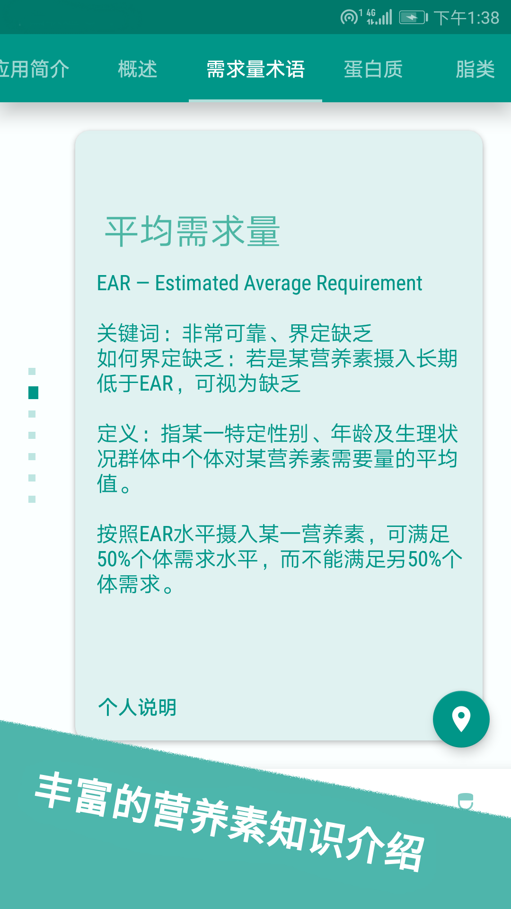
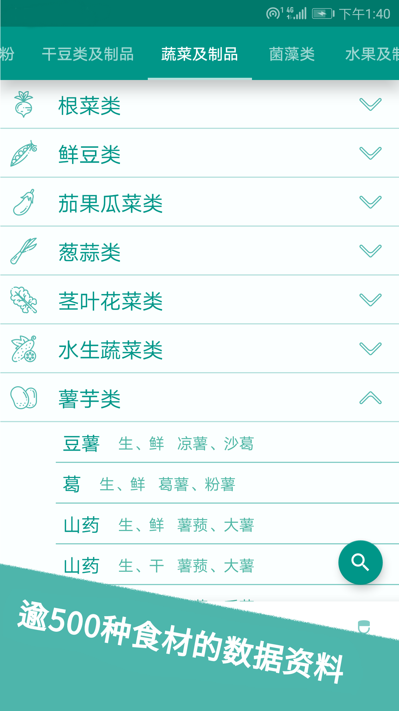
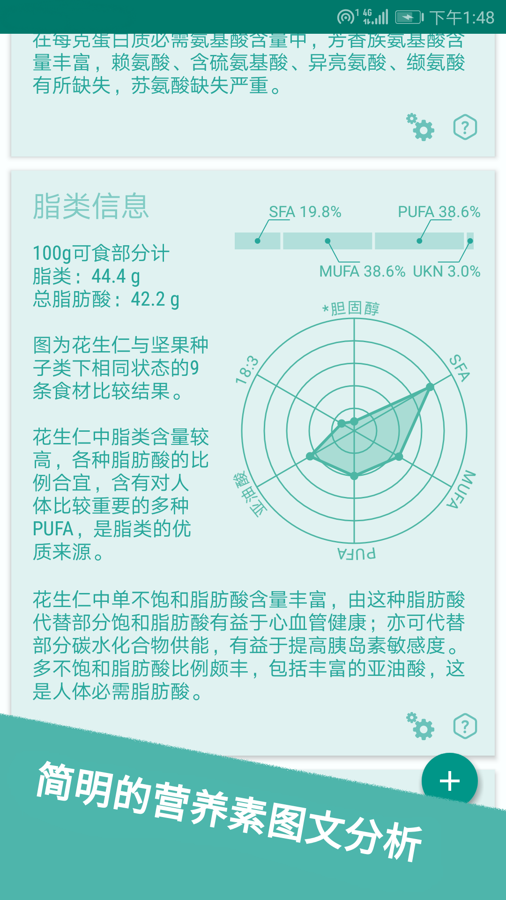
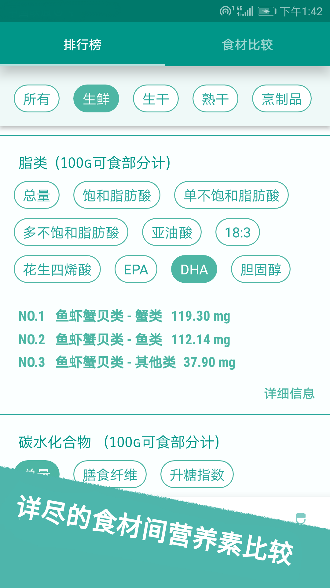
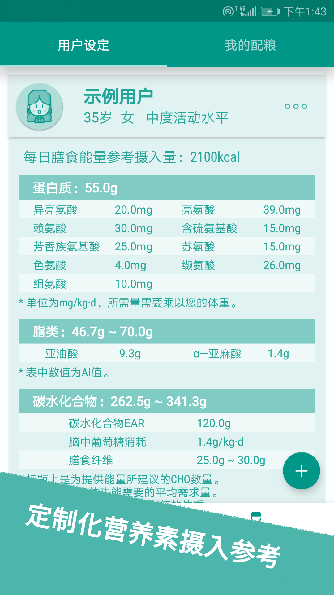
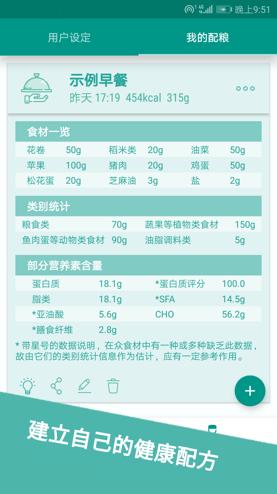
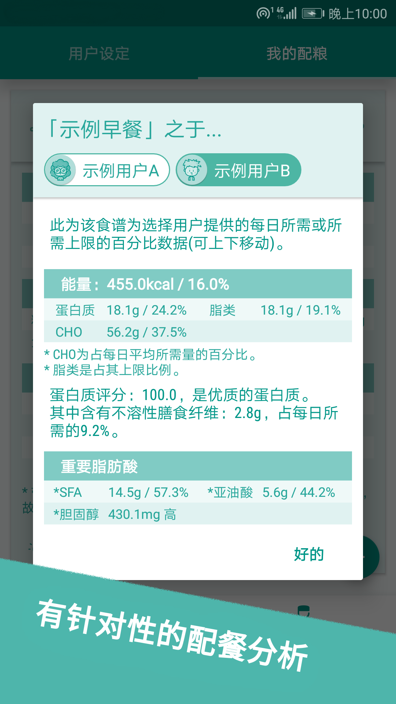

- 丰富的膳食营养知识
- — 讲述了膳食营养的基础知识
- — 列举了各种营养素的自身特性
- — 简明阐述了各种营养素对身体的作用
- — 提供详尽的营养素参考摄入量信息

- 全面的食材营养成分信息
- 包括十三个类别下的五百多种食材，基本涵盖了所有常见食材

- 简明的营养素图文分析
- — 整合了多种信息源，提供了食材的蛋白质、脂类、碳水化合物、维生素以及元素信息
- — 并根据营养素的膳食作用，提出食材的简要的分析，方便您更好地了解它们
- — 您可以轻松地将食材分析信息分享给好友

- 分门别类的食材间比较
- — 每百克食材中所含各种营养素的排行榜，能帮助您快速建立食物印象
- — 另外，应用中还提供两种食材的各种营养素相比，可以让您了解食材间究竟有哪些差异
- — 您可以轻松地将排行信息、比较结果分享给好友

- 全面的营养素摄入参考
- — 不同年龄、身体状态的人群对营养素的需求是不一样的，应用中会根据您的情况，列举主要营养素的每日参考摄入。这为您评估调整膳食结构提供了可靠依据。
- — 您可以轻松地与朋友分享营养素参考摄入。

- 建立自己的健康配方
- — 您可以选择多种食材组合，最终调整成自己的健康配方。这里可以是一道菜、一顿饭、一日饮食记录，或者是一次加餐的零食，您可以当它是一个统计工具。
- — 您可以轻松地与朋友分享得意的食物组合。

- 有针对性地配餐分析
- 已经保存的食物配方，可以了解它究竟为您提供了多少每日所需，并提供简要的优化建议。